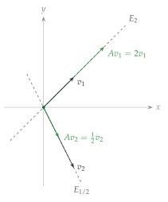
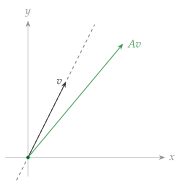
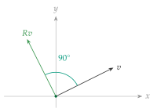

Para arrancarGoogle ordena páginas buscando un vector propio; los puentes se caen si una frecuencia coincide con un valor propio. Hoy buscamos las direcciones que una matriz solo estira.
Una matriz A de tamaño n×n actúa sobre Rn moviendo los vectores: a cada x le asigna Ax. En general el vector Ax apunta en una dirección distinta de la de x; la matriz gira, cizalla y estira a la vez, y la acción total es difícil de describir. Pero casi siempre existen direcciones privilegiadas en las que la matriz se comporta de la manera más sencilla posible: sobre los vectores de esa dirección, A no gira nada, solo estira, encoge o invierte. Esas direcciones, y los factores de estiramiento correspondientes, son los vectores y los valores propios.
El tema es central por dos razones. La primera es que resume en muy pocos números y vectores el comportamiento de toda la matriz: veremos, por ejemplo, que la traza y el determinante se leen en ellos, y que calcular A10x deja de ser un producto de diez matrices. La segunda es que sirve de puerta a los tres capítulos siguientes, donde se pregunta cuándo una matriz puede reducirse a una diagonal (diagonalización), qué ocurre si la matriz es simétrica (diagonalización ortogonal) y qué se hace cuando no se puede diagonalizar (forma de Jordan). En este capítulo fijamos el vocabulario, aprendemos a calcular valores y vectores propios y demostramos las propiedades básicas.
Sea A una matriz n×n. Un escalar λ (real o complejo) es un valor propio de A si existe un vector no nulov tal que Av=λv. A todo vector no nulo v que cumpla esta igualdad se le llama vector propio de A correspondiente a λ.
Geométricamente, Av=λv dice que la imagen de v queda sobre la misma recta por el origen que v: la matriz no lo gira, solo lo multiplica por el escalar λ. Si λ>0, Av tiene el mismo sentido que v y es más largo si λ>1, más corto si 0<λ<1; si λ<0, Av tiene el sentido opuesto; si λ=0, Av es el vector cero. La figura siguiente muestra la matriz A=(3/211/21), que, como se comprueba con un cálculo directo, cumple A(11)=(22)=2(11),A(1−2)=(1/2−1)=21(1−2). Así, v1=(1,1) es un vector propio para λ1=2 (su imagen se estira al doble) y v2=(1,−2) es un vector propio para λ2=21 (su imagen se encoge a la mitad). En ambos casos v y Av están sobre la misma recta.

Vectores propios de A=(3/211/21) (en negro) y sus imágenes (en verde). Cada imagen queda sobre la recta de su vector: Av1=2v1 se estira y Av2=21v2 se encoge.
Para contrastar, tomemos un vector que no es propio: v=(1,2). Su imagen es Av=(3/211/21)(12)=(5/23). Si Av=λv para algún λ, las componentes cumplirían 5/2=λ y 3=2λ, incompatibles. En la figura siguiente, Av se sale de la recta generada por v (la recta punteada): la matriz lo gira además de estirarlo. Esto es lo que ocurre con casi todos los vectores; los vectores propios son las excepciones que hacen legible la matriz.

El vector v=(1,2) no es propio de A: su imagen Av=(5/2,3) no está sobre la recta gen{v} (punteada).
(a) El vector cero no puede ser vector propio: la definición exige v=0, pues A0=λ0 para todo λ y la igualdad no daría información alguna.
(b) El escalar λ=0sí puede ser valor propio: significa que Av=0 para algún v=0, es decir, que A tiene núcleo no trivial.
(c) Una matriz puede tener varios valores propios, y una misma raíz puede repetirse (lo precisaremos con las multiplicidades).
(d) Otros nombres: autovalores o valores característicos para los λ, y autovectores o vectores característicos para los v.
(e) Si v es un vector propio para λ y c=0, entonces cv también lo es: A(cv)=cAv=cλv=λ(cv). Cada valor propio tiene, pues, infinitos vectores propios; lo que se busca es una descripción de todos ellos.
Sea A=(200−1). Comprueba que v1=(1,0) es un vector propio de A correspondiente a λ1=2 y que v2=(0,1) lo es correspondiente a λ2=−1.
Soluciónintenta primero
Basta multiplicar y comparar con la definición Av=λv: Av1=(200−1)(10)=(20)=2(10)=λ1v1,Av2=(200−1)(01)=(0−1)=(−1)(01)=λ2v2. Como v1,v2=0, son vectores propios, y 2 y −1 son valores propios de A. Geométricamente, la matriz estira el eje x al doble y refleja el eje y respecto del origen.
Considera A=100−201101. Verifica que v1=(−3,−1,1) y v2=(1,0,0) son vectores propios de A y encuentra los valores propios correspondientes.
Soluciónintenta primero
Estrategia.
Se calcula Av y se busca el escalar λ con Av=λv.Av1=100−201101−3−11=−3+2+10−1+1=000=0⋅v1. Luego v1 es un vector propio correspondiente a λ1=0. Por otra parte, Av2=100−201101100=100=1⋅v2, de modo que v2 es un vector propio correspondiente a λ2=1. Este ejemplo muestra que 0 puede ser valor propio, como advertimos en la observación (b).
Interactivo¿Cuándo Ax es paralelo a x?
Gira x (o anímalo): cuando Ax cae sobre la misma recta, encontraste un vector propio.
11.2 Cómo se calculan: el polinomio característico
Verificar que un vector dado es propio es fácil. El problema real es el inverso: dada A, encontrar todos sus valores y vectores propios. La clave es traducir la ecuación Av=λv a un sistema homogéneo.
Teorema 11.4· Caracterización de los valores propios
Sea A una matriz n×n y λ un escalar. Entonces λ es un valor propio de A si y solo si det(A−λI)=0. Además, los vectores propios correspondientes a λ son exactamente las soluciones no nulas del sistema homogéneo (A−λI)v=0.
Demostraciónmostrar
Sea v∈Rn (o Cn). Como λv=λIv y el producto de matrices distribuye sobre la suma, Av=λv⟺Av−λIv=0⟺(A−λI)v=0. Esto prueba la segunda afirmación: v cumple Av=λv si y solo si es solución del sistema homogéneo (A−λI)v=0, y es vector propio cuando además v=0.
Por definición, λ es valor propio si y solo si existe v=0 con Av=λv; por lo que acabamos de ver, si y solo si el sistema homogéneo (A−λI)v=0 tiene una solución no trivial. Ahora bien, un sistema homogéneo cuadrado Bv=0 tiene solución no trivial si y solo si la matriz B no es invertible (si B fuera invertible, multiplicando por B−1 resultaría v=0; y si B no es invertible, su nulidad es positiva y hay soluciones no nulas), y B no es invertible si y solo si detB=0. Aplicado a B=A−λI: λ es valor propio si y solo si det(A−λI)=0.
Sea A una matriz n×n. El determinante de A−λI, considerado como función de λ, se llama polinomio característico de A y se denota p(λ)=det(A−λI). La ecuación p(λ)=0 es la ecuación característica de A.
Para que el nombre esté justificado hay que comprobar que p es, en efecto, un polinomio, y conocer su grado. Lo hacemos con la fórmula del determinante como suma sobre permutaciones.
Si A=(aij) es una matriz n×n, entonces p(λ)=det(A−λI) es un polinomio de grado exactamente n de la forma p(λ)=(−1)nλn+(−1)n−1(trA)λn−1+⋯+detA, donde trA=a11+⋯+ann es la traza de A. En particular, A tiene a lo sumo n valores propios distintos.
Demostraciónmostrar
Por la fórmula de Leibniz, p(λ)=σ∑sgn(σ)i=1∏n(aiσ(i)−λδiσ(i)), donde σ recorre las permutaciones de {1,…,n} y δij es la delta de Kronecker. Cada factor es un polinomio de grado a lo sumo 1 en λ, así que p es un polinomio.
Miremos el grado de cada sumando. Si σ es la identidad, el producto es ∏i(aii−λ), de grado n. Si σ no es la identidad, entonces mueve al menos dos índices (una permutación que mueve uno solo es imposible), y para esos índices δiσ(i)=0: el factor es la constante aiσ(i). Por tanto a lo sumo n−2 factores contienen a λ y el sumando tiene grado ≤n−2. Se sigue que los términos de grado n y n−1 de p provienen únicamente de la identidad: i=1∏n(aii−λ)=(−1)nλn+(−1)n−1(a11+⋯+ann)λn−1+(teˊrminos de grado≤n−2). Esto da los dos primeros coeficientes. El término independiente es p(0)=det(A−0⋅I)=detA. Finalmente, como p tiene grado n, tiene a lo sumo n raíces distintas, que por el teorema anterior son los valores propios.
Por el teorema fundamental del álgebra, p tiene exactamente n raíces en C, contadas con su multiplicidad. En particular, toda matriz cuadrada tiene al menos un valor propio complejo. Y si A es real de tamaño impar, p es un polinomio real de grado impar y, por el teorema del valor intermedio, tiene al menos una raíz real. En cambio, una matriz real de tamaño par puede no tener ningún valor propio real; lo veremos con una rotación en la sección de los valores propios complejos.
Definición · Procedimiento 11.7 · Hallar valores y vectores propios
Sea A una matriz n×n.
Calcula el polinomio característico p(λ)=det(A−λI).
Halla las raíces de la ecuación característica p(λ)=0: son los valores propios de A.
Para cada valor propio λi, resuelve el sistema homogéneo (A−λiI)x=0 (por Gauss-Jordan). Sus soluciones no nulas son los vectores propios correspondientes.
Encuentra los valores propios de A=(41−21) y sus vectores propios.
Soluciónintenta primero
Estrategia.
Se plantea Av=λv como sistema homogéneo, se exige det(A−λI)=0 y se resuelve el sistema para cada raíz.Paso 1: polinomio característico.A−λIp(λ)=(4−λ1−21−λ),=(4−λ)(1−λ)−(−2)(1)=λ2−5λ+4+2=λ2−5λ+6.Paso 2: raíces.λ2−5λ+6=(λ−2)(λ−3)=0, luego λ1=2 y λ2=3 son los valores propios. (Comprobación: λ1+λ2=5=trA y λ1λ2=6=detA.)
Paso 3: vectores propios. Para λ1=2: (4−21−21−200)=(21−2−100)F1→21F1(11−1−100)F2→F2−F1(10−1000). La única ecuación es x−y=0, es decir x=y, con y libre: (xy)=(yy)=y(11). Los vectores propios para λ1=2 son los múltiplos no nulos de v1=(1,1). Para λ2=3: (4−31−21−300)=(11−2−200)F2→F2−F1(10−2000), así que x=2y y (xy)=(2yy)=y(21). Los vectores propios para λ2=3 son los múltiplos no nulos de v2=(2,1). Verificación: A(1,1)=(4−2,1+1)=(2,2)=2(1,1) y A(2,1)=(8−2,2+1)=(6,3)=3(2,1).
Veamos ahora dos propiedades del polinomio característico que se usarán constantemente. La primera dice que no depende de la base en que se escriba la matriz.
Si A y B son semejantes, es decir, si existe una matriz invertible P con B=P−1AP, entonces tienen el mismo polinomio característico y, por tanto, los mismos valores propios con las mismas multiplicidades algebraicas. Además, si v es un vector propio de A para λ, entonces P−1v es un vector propio de B para λ.
Demostraciónmostrar
Como I=P−1IP se tiene B−λI=P−1AP−λP−1P=P−1(A−λI)P. Por la multiplicatividad del determinante y detP−1=1/detP, det(B−λI)=det(P−1)det(A−λI)det(P)=detP1det(A−λI)detP=det(A−λI). Así pB=pA. Para la última afirmación, si Av=λv, entonces B(P−1v)=P−1APP−1v=P−1Av=P−1λv=λ(P−1v), y P−1v=0 porque P−1 es invertible.
La segunda propiedad simplifica el cálculo cuando la matriz es triangular.
Los valores propios de una matriz triangular (superior o inferior) son las entradas de su diagonal principal.
Demostraciónmostrar
Si A es triangular, también lo es A−λI, cuyas entradas diagonales son aii−λ. El determinante de una matriz triangular es el producto de su diagonal, así que p(λ)=∏i=1n(aii−λ), cuyas raíces son exactamente a11,…,ann.
11.3 Espacio propio y multiplicidades
Los vectores propios de un valor propio λ, junto con el vector cero, forman un conjunto con estructura propia.
Sea A una matriz n×n y λ un valor propio de A. Entonces el conjunto Eλ={x:Ax=λx} es un subespacio de Rn (de Cn si λ es complejo).
Demostraciónmostrar
Por el teorema 11.4, Ax=λx equivale a (A−λI)x=0; luego Eλ=NA−λI es el espacio nulo de una matriz, que es un subespacio. Para que el argumento sea independiente, verifiquemos los tres requisitos directamente. (i) A0=0=λ0, así que 0∈Eλ. (ii) Si x,y∈Eλ, entonces A(x+y)=Ax+Ay=λx+λy=λ(x+y), luego x+y∈Eλ. (iii) Si x∈Eλ y c es un escalar, A(cx)=cAx=cλx=λ(cx), luego cx∈Eλ.
Al subespacio Eλ={x:Ax=λx}=NA−λI se le llama espacio propio (o espacio característico) de A correspondiente a λ. Está formado por el vector cero y por todos los vectores propios de λ.
Calcular una base de Eλ es, entonces, calcular una base del espacio nulo de A−λI, como en el capítulo de los espacios fundamentales. Ahora sí podemos precisar qué significa que una raíz «se repita».
La multiplicidad algebraicama(λi) es el mayor entero k tal que (λ−λi)k divide al polinomio característico de A; es el número de veces que λi aparece como raíz.
La multiplicidad geométricamg(λi) es la dimensión del espacio propio: mg(λi)=dimEλi=ν(A−λiI).
La primera cuenta cuántas veces aparece la raíz; la segunda, cuántos vectores propios linealmente independientes le corresponden. Los dos ejemplos siguientes muestran cada uno una situación distinta.
Encuentra los valores y vectores propios de A=200120002 y determina las multiplicidades.
Soluciónintenta primero
Polinomio característico. Desarrollando por la tercera fila, p(λ)=det2−λ0012−λ0002−λ=(2−λ)det(2−λ012−λ)=(2−λ)(2−λ)(2−λ)=(2−λ)3.Raíces.p(λ)=0⟺(2−λ)3=0, de donde λ1=λ2=λ3=2: hay un único valor propio, λ=2, con ma(2)=3 (nota que p(λ)=−(λ−2)3).
Espacio propio. Resolvemos (A−2I)x=0: 000100000000. La matriz ya está en forma escalonada reducida; la única ecuación es y=0, con x y z libres: xyz=x0z=x100+z001. Por tanto E2=gen{(1,0,0),(0,0,1)}, con esos dos vectores linealmente independientes, y mg(2)=dimE2=2. En resumen mg(2)=2<3=ma(2): hay dos vectores propios independientes, pero la raíz cuenta tres veces.
Ejemplo 11.15· Una matriz 3×3 con tres valores propios distintos
Encuentra los valores y vectores propios de A=11420−4−115.
Soluciónintenta primero
Polinomio característico. Desarrollamos det(A−λI) por la primera fila: p(λ)=det1−λ142−λ−4−115−λ=(1−λ)[(−λ)(5−λ)−(1)(−4)]−2[(1)(5−λ)−(1)(4)]+(−1)[(1)(−4)−(−λ)(4)]=(1−λ)(λ2−5λ+4)−2(1−λ)−(4λ−4)=(1−λ)(λ2−5λ+4)−2(1−λ)+4(1−λ)=(1−λ)(λ2−5λ+6)=(1−λ)(λ−2)(λ−3).Raíces.λ1=1, λ2=2, λ3=3, todas simples. (Comprobación: 1+2+3=6=trA y 1⋅2⋅3=6=detA.)
Vectores propios. Para λ1=1: 0142−1−4−114000F1↔F2104−12−41−14000F3→F3−4F1100−1201−10000F2→21F2100−1101−210000F1→F1+F210001021−210000. Con z libre, x=−21z, y=21z, es decir (x,y,z)=2z(−1,1,2). Luego E1=gen{(−1,1,2)}.
Para λ2=2: −1142−2−4−113000F2→F2+F1F3→F3+4F1−100204−10−1000F1→−F1F2↔F3100−2401−10000F2→41F2100−2101−410000F1→F1+2F210001021−410000. Con z libre, x=−21z, y=41z, es decir (x,y,z)=4z(−2,1,4). Luego E2=gen{(−2,1,4)}.
Para λ3=3: −2142−3−4−112000F3→F3+2F1−2102−30−110000F1↔F21−20−3201−10000F2→F2+2F1100−3−40110000F2→−41F2100−3101−410000F1→F1+3F210001041−410000. Con z libre, x=−41z, y=41z, es decir (x,y,z)=4z(−1,1,4). Luego E3=gen{(−1,1,4)}.
Comprobación.A(−1,1,2)=(−1+2−2,−1+0+2,−4−4+10)=(−1,1,2); A(−2,1,4)=(−2+2−4,−2+4,−8−4+20)=(−4,2,8)=2(−2,1,4); A(−1,1,4)=(−1+2−4,−1+4,−4−4+20)=(−3,3,12)=3(−1,1,4). Aquí cada valor propio tiene ma=mg=1.
Con lo que sabemos, podemos calcular todos los valores propios de la matriz A=100−201101 de ese ejemplo. Desarrollando por la segunda fila, p(λ)=−λdet(1−λ011−λ)=−λ(1−λ)2, así que λ=0 es simple y λ=1 tiene ma(1)=2. Para λ=1 las ecuaciones de (A−I)x=0 son −2y+z=0, −y=0, y=0, o sea y=z=0: E1=gen{(1,0,0)} y mg(1)=1<2.
Los dos ejemplos con mg<ma no son accidentes: la multiplicidad geométrica nunca puede superar a la algebraica, y nunca es cero.
Sea A una matriz n×n y λ un valor propio de A. Entonces 1≤mg(λ)≤ma(λ).
Demostraciónmostrar
Como λ es valor propio, existe un vector propio no nulo, luego Eλ={0} y mg(λ)=dimEλ≥1.
Sea k=mg(λ) y sea v1,…,vk una base de Eλ. La completamos a una base v1,…,vn de Rn (o de Cn) y formamos la matriz invertible P=(v1∣⋯∣vn). Para j≤k se tiene Avj=λvj; es decir, la j-ésima columna de AP es λvj=P(λej). Las columnas restantes de AP son combinaciones de v1,…,vn, de modo que existen matrices B (de tamaño k×(n−k)) y C (de tamaño (n−k)×(n−k)) con AP=P(λIk0BC),esto es,M:=P−1AP=(λIk0BC). La matriz M−tI es triangular por bloques, y el determinante de una matriz triangular por bloques es el producto de los determinantes de los bloques diagonales: det(M−tI)=det((λ−t)Ik)det(C−tIn−k)=(λ−t)kdet(C−tIn−k). Como A y M son semejantes, tienen el mismo polinomio característico (teorema 11.9): pA(t)=(λ−t)kq(t) con q(t)=det(C−tIn−k) un polinomio. Luego (t−λ)k divide a pA, y por definición ma(λ)≥k=mg(λ).
Sea A=(1021). Halla sus valores propios, los espacios propios y las multiplicidades.
Soluciónintenta primero
La matriz es triangular; su polinomio característico es p(λ)=det(1−λ021−λ)=(1−λ)2, con una única raíz λ=1 y ma(1)=2. Resolvemos (A−I)x=0: (002000)F1→21F1(001000), es decir y=0 y x libre: (x,y)=x(1,0). Por tanto E1=gen{(1,0)} y mg(1)=1. Aquí mg(1)=1<2=ma(1): la desigualdad del teorema es estricta y A solo tiene una dirección propia, aunque es de tamaño 2×2. Esta situación es la que, más adelante, impide diagonalizar la matriz y motiva la forma de Jordan.
11.4 Valores propios distintos: independencia lineal
Vectores propios de un mismo valor propio pueden ser dependientes (son múltiplos entre sí, por ejemplo). Lo notable es que los que corresponden a valores propios distintos nunca lo son.
Sea A una matriz n×n. Si λ1,…,λk son valores propios distintos de A y v1,…,vk son vectores propios correspondientes (Avi=λivi, vi=0), entonces v1,…,vk son linealmente independientes.
Demostraciónmostrar
Por inducción sobre k. Para k=1, v1=0 y un solo vector no nulo es linealmente independiente.
Supongamos cierto el resultado para k−1 vectores propios de valores propios distintos, y sea c1v1+c2v2+⋯+ckvk=0.(∗) Multiplicando por A y usando Avi=λivi, c1λ1v1+c2λ2v2+⋯+ckλkvk=0.(∗∗) Multiplicando (∗) por λk y restando de (∗∗), el último término desaparece: c1(λ1−λk)v1+c2(λ2−λk)v2+⋯+ck−1(λk−1−λk)vk−1=0. Por la hipótesis de inducción, v1,…,vk−1 son independientes, así que cada coeficiente es cero: ci(λi−λk)=0 para i=1,…,k−1. Como los valores propios son distintos, λi−λk=0, y por tanto c1=⋯=ck−1=0. Entonces (∗) se reduce a ckvk=0, y como vk=0, ck=0. Todos los coeficientes son nulos: los vectores son independientes.
En el ejemplo 11.8 se ve el teorema en acción: (1,1) y (2,1), vectores propios de 2=3, son independientes. Y en el ejemplo 11.15, los tres vectores (−1,1,2), (−2,1,4) y (−1,1,4) forman una base de R3. El teorema tiene una versión para subespacios enteros, que es la que se usa en la práctica.
Sean λ1,…,λk valores propios distintos de A y sea Bi una base de Eλi. Entonces la unión B1∪⋯∪Bk es un conjunto linealmente independiente.
Demostraciónmostrar
Sea una combinación lineal igual a cero de los vectores de la unión. Agrupando los términos según el espacio propio al que pertenecen, se escribe w1+⋯+wk=0, donde wi∈Eλi es la parte de la combinación que usa vectores de Bi. Si algún wi fuera distinto de cero, los wi no nulos serían vectores propios de valores propios distintos (con una relación de dependencia no trivial ∑wi=0), lo que contradice el teorema 11.18. Luego todos los wi=0. Como Bi es una base, es independiente, y wi=0 obliga a que todos los coeficientes de los vectores de Bi sean cero.
Teorema 11.20· Cuándo hay n vectores propios independientes
Sea A una matriz n×n (con valores propios en C).
(a)A tiene n vectores propios linealmente independientes si y solo si mg(λ)=ma(λ) para todo valor propio λ de A.
(b) En particular, A tiene n vectores propios linealmente independientes si sus n valores propios son distintos.
Demostraciónmostrar
Sean λ1,…,λr los valores propios distintos de A. Como p tiene grado n y se factoriza por completo en C, ma(λ1)+⋯+ma(λr)=n. Por el teorema 11.16, mg(λi)≤ma(λi).
(a) (⇐) Si mg(λi)=ma(λi) para todo i, la unión de bases de los Eλi tiene ∑mg(λi)=∑ma(λi)=n vectores, y es linealmente independiente por el corolario 11.19. (⇒) Supongamos que hay n vectores propios independientes. Cada uno pertenece a algún Eλi; si ni de ellos están en Eλi, son independientes y por tanto ni≤dimEλi=mg(λi). Entonces n=∑ni≤∑mg(λi)≤∑ma(λi)=n, y las desigualdades son igualdades. Como cada término satisface mg(λi)≤ma(λi) y las sumas coinciden, mg(λi)=ma(λi) para todo i.
(b) Si los n valores propios son distintos, cada uno es raíz simple: ma(λi)=1, y por el teorema 11.16, 1≤mg(λi)≤1. Se aplica (a); o, directamente, se toma un vector propio por valor propio y se usa el teorema 11.18.
11.5 Valores propios complejos
El polinomio característico de una matriz real puede tener raíces complejas no reales. Cuando eso ocurre, los vectores propios correspondientes tienen entradas complejas, pues hay que resolver (A−λI)v=0 en Cn. Todo lo anterior sigue valiendo, con la misma demostración, si se trabaja con escalares complejos.
Ejemplo 11.21· Valores propios complejos de una matriz real
Encuentra los valores y vectores propios de A=(25−1−2).
Soluciónintenta primero
Polinomio característico.p(λ)=det(2−λ5−1−2−λ)=(2−λ)(−2−λ)+5=λ2−4+5=λ2+1.Raíces.λ2+1=0 da λ1=i y λ2=−i. No hay valores propios reales: ninguna recta de R2 queda fija por A. (Comprobación: i+(−i)=0=trA y i(−i)=1=detA.)
Vectores propios. Para λ1=i trabajamos con escalares complejos: (2−i5−1−2−i00)F1→52+iF1(15−52+i−2−i00)F2→F2−5F1(10−52+i000), donde usamos (2−i)(2+i)=4−i2=5, por lo que 52+i(2−i)=1, y que 5⋅(−52+i)=−(2+i) cancela el término −2−i de la segunda fila. Queda x=52+iy con y libre. Tomando y=5: (xy)=5y(2+i5),Ei=gen{(2+i5)}. Como A tiene entradas reales, para λ2=−i=λˉ1 se obtiene el vector conjugado (teorema 11.23 más abajo): E−i=gen{(2−i,5)}. Comprobación: A(2+i,5)=(2(2+i)−5,5(2+i)−10)=(−1+2i,5i)=i(2+i,5), pues i(2+i)=2i−1 y i⋅5=5i.
Ejemplo 11.22· Una rotación no tiene direcciones propias reales
Halla los valores y vectores propios de la rotación de 90∘ del plano, R=(01−10), que envía (x,y) en (−y,x).
Soluciónintenta primero
Estrategia.
Geométricamente ninguna recta por el origen queda en su sitio al girarla 90∘, así que no esperamos valores propios reales; los valores propios aparecerán como raíces complejas.

La rotación R de 90∘ lleva cada vector v a Rv, perpendicular a v: nunca sobre la misma recta.
Polinomio característico.p(λ)=det(−λ1−1−λ)=λ2+1,λ1=i,λ2=−i.Vectores propios. Para λ1=i: (−i1−1−i00)F1↔F2(1−i−i−100)F2→F2+iF1(10−i000), porque −1+i(−i)=−1+1=0. Queda x=iy: (x,y)=y(i,1); multiplicando el generador por −i se obtiene el múltiplo (1,−i). Así Ei=gen{(1,−i)}. Para λ2=−i se obtiene, de la misma manera, E−i=gen{(1,i)}. Comprobación: R(1,−i)=(−(−i),1)=(i,1)=i(1,−i), pues i⋅(−i)=1; y R(1,i)=(−i,1)=−i(1,i), pues −i⋅i=1.
En general, la rotación de ángulo θ, Rθ=(cosθsenθ−senθcosθ), tiene p(λ)=λ2−2cosθλ+1, con raíces λ=cosθ±isenθ=e±iθ (de módulo 1); si θ no es múltiplo de π no son reales, y los vectores propios son los mismos (1,∓i) para todo θ.
Los valores propios complejos de una matriz real siempre aparecen en pares conjugados.
Sea A una matriz con entradas reales. Si λ∈C es un valor propio de A con vector propio v∈Cn, entonces λˉ es un valor propio de A con vector propio vˉ (el vector con las entradas conjugadas). Además, λ y λˉ tienen la misma multiplicidad algebraica.
Demostraciónmostrar
Como Aˉ=A y la conjugación respeta sumas y productos, al conjugar Av=λv resulta Avˉ=Aˉvˉ=Av=λv=λˉvˉ, y vˉ=0 porque v=0. Además, p tiene coeficientes reales, pues el determinante de una matriz real se calcula con sumas y productos de números reales; un polinomio real cumple p(λˉ)=p(λ), y aplicado a factorizaciones, las multiplicidades de λ y λˉ como raíces coinciden.
11.6 Propiedades de los valores propios
Cerramos el capítulo con las propiedades que relacionan los valores propios con otras cantidades de la matriz. Comenzamos con la invertibilidad.
Sea A una matriz cuadrada. Entonces A es invertible si y solo si 0 no es un valor propio de A.
Demostraciónmostrar
Por el teorema 11.4, 0 es valor propio si y solo si det(A−0⋅I)=detA=0, y una matriz cuadrada es invertible si y solo si su determinante es distinto de cero. Luego A es invertible si y solo si detA=0, si y solo si 0 no es valor propio. (Equivalentemente: 0 es valor propio si y solo si Ax=0 tiene solución no trivial, si y solo si A no es invertible.)
En el ejemplo 11.3, A tiene valor propio 0 y, en efecto, no es invertible (su segunda fila es nula). Ahora la relación con la traza y el determinante, que ya usamos como comprobación en los ejemplos.
Teorema 11.25· Suma y producto de los valores propios
Sea A una matriz n×n con valores propios λ1,…,λn (complejos, repetidos según su multiplicidad algebraica). Entonces λ1+λ2+⋯+λn=trA,λ1λ2⋯λn=detA.
Demostraciónmostrar
Por el teorema fundamental del álgebra, y por ser (−1)n el coeficiente principal (teorema 11.6), p(λ)=(−1)n(λ−λ1)(λ−λ2)⋯(λ−λn). Al desarrollar el producto, el coeficiente de λn−1 es (−1)n(−(λ1+⋯+λn))=(−1)n−1(λ1+⋯+λn). Por el teorema 11.6, ese coeficiente es también (−1)n−1trA. Igualando, λ1+⋯+λn=trA.
Para el segundo resultado evaluamos en λ=0: por un lado p(0)=detA; por otro, p(0)=(−1)n(−λ1)⋯(−λn)=(−1)n(−1)nλ1⋯λn=λ1⋯λn.
Esto explica las comprobaciones que hicimos en los ejemplos: en el ejemplo 11.8, 2+3=5=trA y 2⋅3=6=detA; en el ejemplo 11.14, 2+2+2=6=trA y 2⋅2⋅2=8=detA.
Sea A una matriz cuadrada, λ un valor propio de A y x un vector propio correspondiente.
(a) Para todo entero m>0, λm es un valor propio de Am, con el mismo vector propio x.
(b) Si A es invertible, entonces λ=0 y λ−1 es un valor propio de A−1, con vector propio x.
(c) Si A es invertible, la afirmación (a) vale para todo entero m, positivo o negativo.
Demostraciónmostrar
(a) Por inducción sobre m. Para m=1 es la hipótesis. Si Amx=λmx, entonces Am+1x=A(Amx)=A(λmx)=λmAx=λm+1x.
(b) Como A es invertible, 0 no es valor propio (teorema 11.24), luego λ=0. De Ax=λx, multiplicando por A−1 resulta x=λA−1x, y dividiendo entre λ, A−1x=λ−1x.
(c) Para m>0 es (a). Para m=0, A0x=x=λ0x. Para m=−r<0, Am=(A−1)r, y aplicando (a) a la matriz A−1, que tiene valor propio λ−1 con vector x por (b), A−rx=(λ−1)rx=λmx.
Si el vector de partida se escribe como combinación de vectores propios, el efecto de una potencia de A se calcula sin multiplicar matrices.
Teorema 11.27· Potencias sobre combinaciones de vectores propios
Sea A una matriz cuadrada con vectores propios v1,…,vm correspondientes a los valores propios λ1,…,λm. Si x=c1v1+⋯+cmvm, entonces para todo entero k≥0, Akx=c1λ1kv1+c2λ2kv2+⋯+cmλmkvm.
Demostraciónmostrar
Por la linealidad del producto por Ak y por el teorema 11.26 (a), Akx=Ak(c1v1+⋯+cmvm)=c1Akv1+⋯+cmAkvm=c1λ1kv1+⋯+cmλmkvm.
La matriz A=(0211) tiene valores propios λ1=−1 y λ2=2, con vectores propios x1=(1,−1) y x2=(1,2). Calcula A10(51).
Soluciónintenta primero
Estrategia.
Escribir (5,1) como combinación de x1 y x2 y aplicar el teorema 11.27. Comprobemos primero los datos: Ax1=(−1,2−1)=(−1,1)=−x1, Ax2=(2,2+2)=(2,4)=2x2, y trA=1=−1+2, detA=−2=(−1)(2).
Buscamos c1,c2 con c1x1+c2x2=(5,1), y resolvemos por Gauss-Jordan: (1−11251)F2→F2+F1(101356)F2→31F2(101152)F1→F1−F2(100132), de modo que c1=3, c2=2. (Comprobación: 3(1,−1)+2(1,2)=(5,1).) Entonces A10(51)=3(−1)10(1−1)+2(2)10(12)=(3−3)+(211212)=(3+211−3+212)=(20514093).
Como verificación independiente, con la matriz P=(1−112) de vectores propios y D=(−1002) se tiene A10=PD10P−1 (ideas que se desarrollan en el capítulo siguiente), con P−1=31(21−11): A10=31(1−112)(100210)(21−11)=31(2+210−2+211−1+2101+211)=(342682341683), y en efecto A10(5,1)=(342⋅5+341,682⋅5+683)=(2051,4093).
Ejercicios propuestos
Halla los valores y vectores propios de (3113) y de (1011). Calcula las multiplicidades y decide en cuál de las dos hay dos vectores propios independientes.
Halla el polinomio característico de (0−615) y verifica que la suma de sus raíces es la traza y el producto el determinante.
Demuestra que A y AT tienen los mismos valores propios (usa que detB=detBT).
Si A2=A y λ es un valor propio de A, demuestra que λ=0 o λ=1.
Si A es una matriz n×n y λ es un valor propio de A, demuestra que λ−c es un valor propio de A−cI para todo escalar c, con los mismos vectores propios.
Ojo, parcero: errores que veo en los parciales
«0 no puede ser valor propio» → puede; lo que no puede ser 0 es el vector propio
«valores propios de A+B = suma de los de A y B» → en general no
✦Practica activa
Retos para afianzar las ideas del capítulo: arma la demostración con los bloques en el orden correcto y caza el paso falso de un argumento.
🧩 Ordena la demostraciónValores propios de A2
Demuestra que si Av=λv con v=0, entonces λ2 es valor propio de A2.
🔍 Encuentra el errorPolinomio característico
Se buscan los valores propios de A=(2112).
✎ Repaso del capítulo
Suma de los valores propios de (4213)
La suma de los valores propios es la traza: 4+3=7.
0 es valor propio de A si y solo si…
0 es valor propio ⟺det(A−0I)=detA=0⟺A no es invertible.
Producto de los valores propios de (4213).
puedes escribir fracciones como 3/2
El producto es el determinante: 4⋅3−1⋅2=10.
Una matriz triangular tiene como valores propios sus entradas diagonales.
det(A−λI) es el producto de (aii−λ): las raíces son las entradas diagonales. Verdadero.